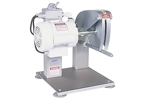

Biro Bcc-100 Poultry Cutter
Call for Pricing US and Canada 1-800-521-4886
Biro Bcc-100 Poultry Cutter
Cut chicken, turkey, duck, fish, and rabbit all day with the Biro BCC-100 Poultry Cutter. The special 9” cutting blade lets you cut pieces accurately while providing minimal tearing of the skin. You achieve almost no cutting loss and almost no product shrink. Since the
blade is designed to slice instead of tear product tissue, your shelf life is maximized.
The 3/4 horsepower motor ensures that you have all of the power you need, and the machine design lets you cut for maximum productivity. The BCC-100 is designed for easy wash down and good sanitation. Left hand design machines are available if your product flow requires it.